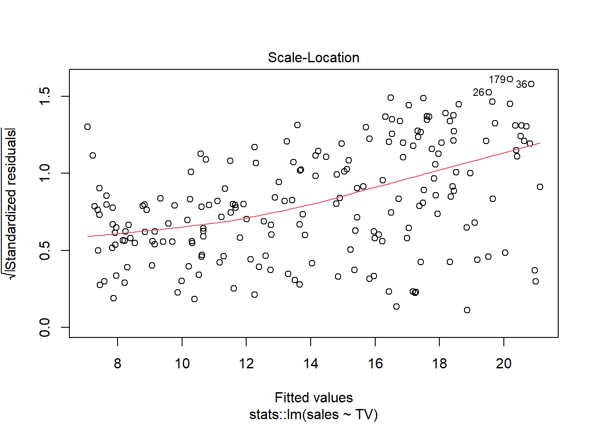
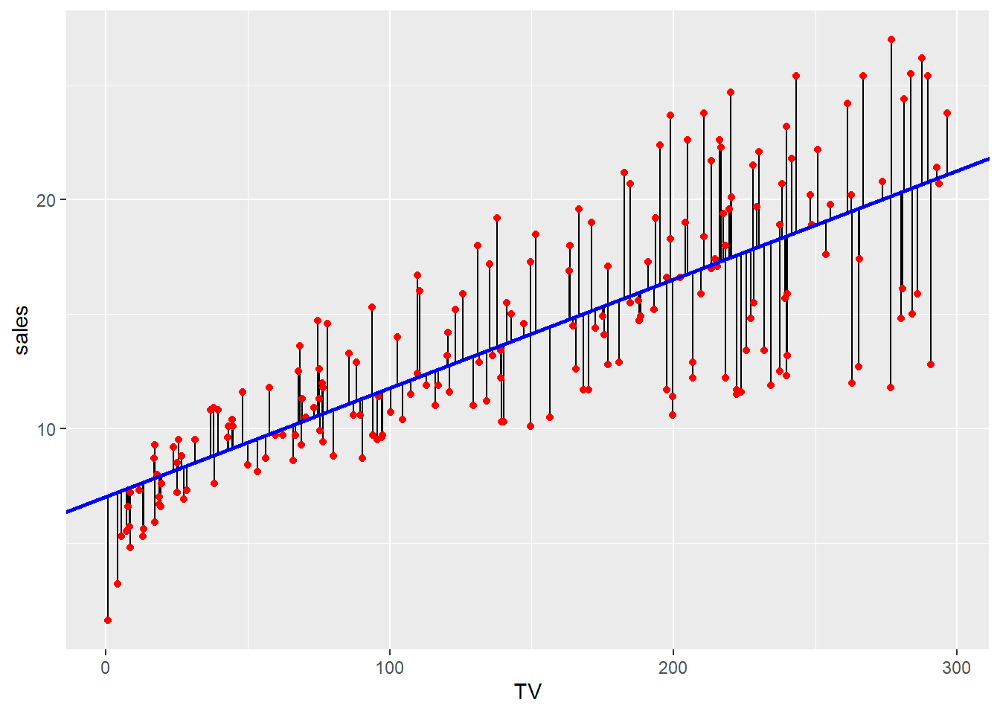
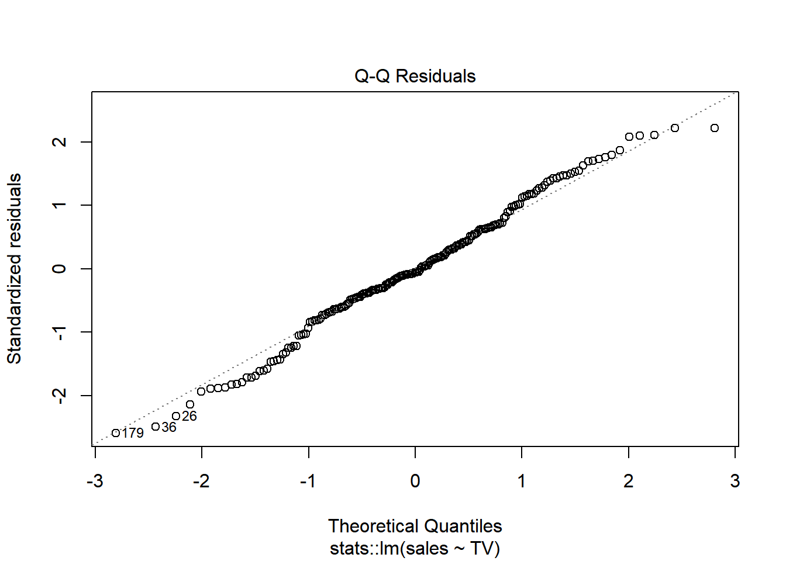
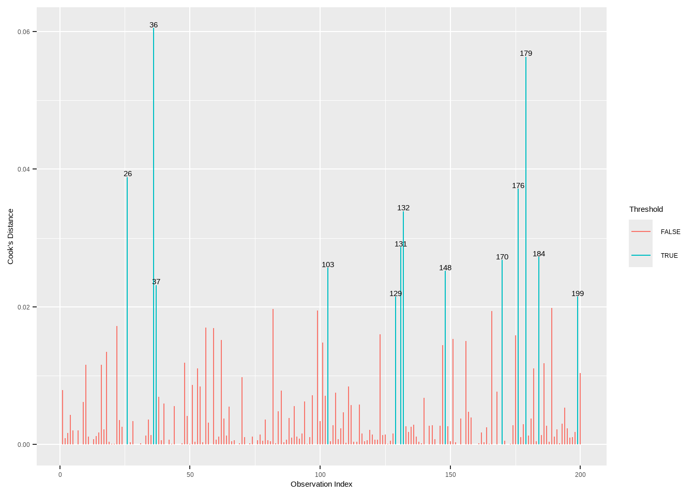
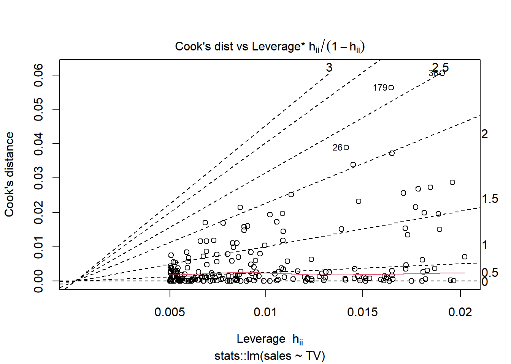

6 线性回归
tidymodels specification
parsnip for model fitting specification
Code
#linear model specification 线性模型规范
lm_spec <-linear_reg() |>
set_mode("regression") |>
set_engine("lm")
lm_spec
#> Linear Regression Model Specification (regression)
#>
#> Computational engine: lmrecipes and workflows to perform the pre-processing specification and transformations
Code
advertising<-read_csv("data/Advertising.csv")
income1<-read_csv("data/Income1.csv")
income2<-read_csv("data/Income2.csv")6.1 简单线性回归
Code
p_sales<-function(x){
ggplot(advertising,aes({{x}},sales))+
geom_point(shape=21,color="red")+
geom_smooth(formula = 'y ~ x',method = "lm",se=FALSE)
}
p_sales(TV)|p_sales(radio)|p_sales(newspaper)
Code
lm_sales_tv <- lm_spec |> fit(sales ~ TV, data = advertising)
lm_sales_tv
#> parsnip model object
#>
#>
#> Call:
#> stats::lm(formula = sales ~ TV, data = data)
#>
#> Coefficients:
#> (Intercept) TV
#> 7.03259 0.04754
#回归诊断图
plot(lm_sales_tv$fit) 



Code
# 模型摘要
summary(lm_sales_tv$fit)
#>
#> Call:
#> stats::lm(formula = sales ~ TV, data = data)
#>
#> Residuals:
#> Min 1Q Median 3Q Max
#> -8.3860 -1.9545 -0.1913 2.0671 7.2124
#>
#> Coefficients:
#> Estimate Std. Error t value Pr(>|t|)
#> (Intercept) 7.032594 0.457843 15.36 <2e-16 ***
#> TV 0.047537 0.002691 17.67 <2e-16 ***
#> ---
#> Signif. codes: 0 '***' 0.001 '**' 0.01 '*' 0.05 '.' 0.1 ' ' 1
#>
#> Residual standard error: 3.259 on 198 degrees of freedom
#> Multiple R-squared: 0.6119, Adjusted R-squared: 0.6099
#> F-statistic: 312.1 on 1 and 198 DF, p-value: < 2.2e-16
lm_sales_tv |>
pluck("fit")
#>
#> Call:
#> stats::lm(formula = sales ~ TV, data = data)
#>
#> Coefficients:
#> (Intercept) TV
#> 7.03259 0.04754
lm_sales_tv |>
pluck("fit") |>
summary()
#>
#> Call:
#> stats::lm(formula = sales ~ TV, data = data)
#>
#> Residuals:
#> Min 1Q Median 3Q Max
#> -8.3860 -1.9545 -0.1913 2.0671 7.2124
#>
#> Coefficients:
#> Estimate Std. Error t value Pr(>|t|)
#> (Intercept) 7.032594 0.457843 15.36 <2e-16 ***
#> TV 0.047537 0.002691 17.67 <2e-16 ***
#> ---
#> Signif. codes: 0 '***' 0.001 '**' 0.01 '*' 0.05 '.' 0.1 ' ' 1
#>
#> Residual standard error: 3.259 on 198 degrees of freedom
#> Multiple R-squared: 0.6119, Adjusted R-squared: 0.6099
#> F-statistic: 312.1 on 1 and 198 DF, p-value: < 2.2e-16
# 参数估计值
broom::tidy(lm_sales_tv)| term | estimate | std.error | statistic | p.value |
|---|---|---|---|---|
| (Intercept) | 7.0325935 | 0.4578429 | 15.36028 | 0 |
| TV | 0.0475366 | 0.0026906 | 17.66763 | 0 |
Code
# 模型统计信息
broom::glance(lm_sales_tv) | r.squared | adj.r.squared | sigma | statistic | p.value | df | logLik | AIC | BIC | deviance | df.residual | nobs |
|---|---|---|---|---|---|---|---|---|---|---|---|
| 0.6118751 | 0.6099148 | 3.258656 | 312.145 | 0 | 1 | -519.0457 | 1044.091 | 1053.986 | 2102.531 | 198 | 200 |
Code
# 预测
stats::predict(lm_sales_tv, new_data = advertising)| .pred |
|---|
| 17.970775 |
| 9.147974 |
| 7.850224 |
| 14.234395 |
| 15.627218 |
| 7.446162 |
| 9.765950 |
| 12.746498 |
| 7.441409 |
| 16.530414 |
| 10.174765 |
| 17.238710 |
| 8.163966 |
| 11.667416 |
| 16.734822 |
| 16.321253 |
| 10.255578 |
| 20.409404 |
| 10.322129 |
| 14.034741 |
| 17.414596 |
| 18.317792 |
| 7.660077 |
| 17.885209 |
| 9.994126 |
| 19.529976 |
| 13.825579 |
| 18.446141 |
| 18.859710 |
| 10.388680 |
| 20.956076 |
| 12.399480 |
| 11.653155 |
| 19.658325 |
| 11.581850 |
| 20.851495 |
| 19.720123 |
| 10.583581 |
| 9.081423 |
| 17.870948 |
| 16.658763 |
| 15.446579 |
| 20.989351 |
| 16.867925 |
| 8.225763 |
| 15.356259 |
| 11.296630 |
| 18.436634 |
| 17.832918 |
| 10.212795 |
| 16.530414 |
| 11.805272 |
| 17.319523 |
| 15.712784 |
| 19.520469 |
| 16.487631 |
| 7.379611 |
| 13.507084 |
| 17.053317 |
| 17.048564 |
| 9.575804 |
| 19.453918 |
| 18.408112 |
| 11.914606 |
| 13.264647 |
| 10.312622 |
| 8.529998 |
| 13.654448 |
| 18.317792 |
| 17.338537 |
| 16.497139 |
| 12.252117 |
| 8.306575 |
| 13.183835 |
| 17.176913 |
| 7.835963 |
| 8.339851 |
| 12.760759 |
| 7.289291 |
| 12.546844 |
| 10.664393 |
| 18.431880 |
| 10.612103 |
| 10.284100 |
| 17.181666 |
| 16.216673 |
| 10.659639 |
| 12.294900 |
| 11.230079 |
| 12.252117 |
| 13.416764 |
| 8.392141 |
| 17.381320 |
| 18.959537 |
| 12.138029 |
| 14.795327 |
| 16.425834 |
| 15.822118 |
| 20.803958 |
| 13.459547 |
| 17.604742 |
| 21.122454 |
| 20.352360 |
| 15.964728 |
| 18.355821 |
| 13.587896 |
| 8.221010 |
| 11.329906 |
| 7.655323 |
| 19.173451 |
| 17.766367 |
| 18.522199 |
| 15.384781 |
| 16.996273 |
| 10.749959 |
| 10.602595 |
| 13.649694 |
| 10.664393 |
| 13.007949 |
| 7.954804 |
| 13.749521 |
| 7.926282 |
| 17.680801 |
| 12.884354 |
| 17.942252 |
| 11.177789 |
| 7.403379 |
| 10.845032 |
| 17.504915 |
| 9.865777 |
| 7.065869 |
| 19.639311 |
| 7.431901 |
| 17.481147 |
| 8.786696 |
| 9.328613 |
| 8.249531 |
| 20.043372 |
| 9.076669 |
| 15.822118 |
| 10.521783 |
| 16.240441 |
| 17.514423 |
| 12.004926 |
| 11.605618 |
| 13.701984 |
| 18.446141 |
| 18.593505 |
| 8.838986 |
| 9.157481 |
| 20.376129 |
| 12.784527 |
| 16.425834 |
| 15.175620 |
| 15.959975 |
| 7.227494 |
| 11.496284 |
| 14.153582 |
| 7.588772 |
| 13.293169 |
| 15.232664 |
| 11.106484 |
| 15.988497 |
| 14.804834 |
| 12.603888 |
| 18.179936 |
| 7.883499 |
| 16.863171 |
| 17.271986 |
| 20.547260 |
| 9.409426 |
| 14.852371 |
| 7.964312 |
| 15.037764 |
| 17.604742 |
| 20.195489 |
| 18.840695 |
| 15.123330 |
| 20.185982 |
| 14.904661 |
| 14.476831 |
| 17.419349 |
| 9.704153 |
| 20.704131 |
| 19.097393 |
| 16.777605 |
| 13.663955 |
| 16.116846 |
| 20.628073 |
| 7.921529 |
| 8.910291 |
| 10.621610 |
| 7.850224 |
| 14.961705 |
| 14.148829 |
| 8.848493 |
| 11.510545 |
| 15.446579 |
| 20.513985 |
| 18.065848 |
Code
predict(lm_sales_tv, new_data = advertising, type = "conf_int")| .pred_lower | .pred_upper |
|---|---|
| 17.337774 | 18.603775 |
| 8.439101 | 9.856848 |
| 7.024932 | 8.675515 |
| 13.779384 | 14.689405 |
| 15.138794 | 16.115642 |
| 6.582865 | 8.309460 |
| 9.108530 | 10.423370 |
| 12.270304 | 13.222691 |
| 6.577660 | 8.305157 |
| 15.996715 | 17.064114 |
| 9.549526 | 10.800005 |
| 16.659619 | 17.817801 |
| 7.367674 | 8.960258 |
| 11.142463 | 12.192369 |
| 16.188810 | 17.280833 |
| 15.799420 | 16.843086 |
| 9.636500 | 10.874656 |
| 19.564011 | 21.254797 |
| 9.708072 | 10.936186 |
| 13.580343 | 14.489139 |
| 16.823134 | 18.006057 |
| 17.657240 | 18.978344 |
| 6.816987 | 8.503167 |
| 17.258820 | 18.511597 |
| 9.354869 | 10.633383 |
| 18.765535 | 20.294417 |
| 13.370652 | 14.280507 |
| 17.775119 | 19.117163 |
| 18.154028 | 19.565391 |
| 9.779595 | 10.997766 |
| 20.058629 | 21.853522 |
| 11.910304 | 12.888657 |
| 11.127403 | 12.178907 |
| 18.882317 | 20.434333 |
| 11.052050 | 12.111650 |
| 19.964095 | 21.738895 |
| 18.938513 | 20.501733 |
| 9.988760 | 11.178401 |
| 8.366832 | 9.796014 |
| 17.245654 | 18.496242 |
| 16.117413 | 17.200114 |
| 14.965184 | 15.927974 |
| 20.088700 | 21.890003 |
| 16.313537 | 17.422311 |
| 7.435126 | 9.016401 |
| 14.878098 | 15.834421 |
| 10.749779 | 11.843482 |
| 17.766392 | 19.106875 |
| 17.210533 | 18.455304 |
| 9.590464 | 10.835126 |
| 15.996715 | 17.064114 |
| 11.287853 | 12.322691 |
| 16.734797 | 17.904248 |
| 15.220778 | 16.204790 |
| 18.756881 | 20.284057 |
| 15.956421 | 17.018841 |
| 6.509989 | 8.249233 |
| 13.049061 | 13.965107 |
| 16.486822 | 17.619813 |
| 16.482385 | 17.614743 |
| 8.902886 | 10.248722 |
| 18.696287 | 20.211548 |
| 17.740207 | 19.076017 |
| 11.402912 | 12.426301 |
| 12.802445 | 13.726849 |
| 9.697850 | 10.927393 |
| 7.766900 | 9.293095 |
| 13.198199 | 14.110697 |
| 17.657240 | 18.978344 |
| 16.752474 | 17.924601 |
| 15.965378 | 17.028899 |
| 11.756613 | 12.747620 |
| 7.523303 | 9.089849 |
| 12.719897 | 13.647773 |
| 16.602072 | 17.751753 |
| 7.009342 | 8.662584 |
| 7.559601 | 9.120102 |
| 12.285039 | 13.236479 |
| 6.411058 | 8.167525 |
| 12.063517 | 13.030171 |
| 10.075353 | 11.253433 |
| 17.762028 | 19.101732 |
| 10.019331 | 11.204874 |
| 9.667179 | 10.901020 |
| 16.606501 | 17.756832 |
| 15.700479 | 16.732866 |
| 10.070261 | 11.249017 |
| 11.801281 | 12.788518 |
| 10.679060 | 11.781098 |
| 11.756613 | 12.747620 |
| 12.957366 | 13.876163 |
| 7.616628 | 9.167655 |
| 16.792229 | 17.970411 |
| 18.245294 | 19.673779 |
| 11.637311 | 12.638747 |
| 14.332816 | 15.257838 |
| 15.898163 | 16.953504 |
| 15.325305 | 16.318932 |
| 19.921111 | 21.686805 |
| 13.000827 | 13.918267 |
| 16.999475 | 18.210010 |
| 20.208944 | 22.035963 |
| 19.512330 | 21.192391 |
| 15.461268 | 16.468188 |
| 17.692182 | 19.019460 |
| 13.130918 | 14.044874 |
| 7.429938 | 9.012081 |
| 10.785112 | 11.874700 |
| 6.811787 | 8.498860 |
| 18.440630 | 19.906273 |
| 17.149034 | 18.383700 |
| 17.844906 | 19.199493 |
| 14.905619 | 15.863943 |
| 16.433557 | 17.558990 |
| 10.166949 | 11.332968 |
| 10.009142 | 11.196049 |
| 13.193397 | 14.105991 |
| 10.075353 | 11.253433 |
| 12.539655 | 13.476243 |
| 7.139232 | 8.770377 |
| 13.294105 | 14.204937 |
| 7.108064 | 8.744501 |
| 17.069892 | 18.291710 |
| 12.412534 | 13.356174 |
| 17.311465 | 18.573041 |
| 10.623447 | 11.732130 |
| 6.536018 | 8.270741 |
| 10.268612 | 11.421452 |
| 16.906950 | 18.102881 |
| 9.216364 | 10.515190 |
| 6.166202 | 7.965536 |
| 18.865022 | 20.413599 |
| 6.567250 | 8.296553 |
| 16.884903 | 18.077391 |
| 8.046420 | 9.526971 |
| 8.635095 | 10.022132 |
| 7.461064 | 9.037999 |
| 19.232134 | 20.854610 |
| 8.361669 | 9.791669 |
| 15.325305 | 16.318932 |
| 9.922488 | 11.121078 |
| 15.722983 | 16.757898 |
| 16.915767 | 18.113078 |
| 11.497788 | 12.512064 |
| 11.077178 | 12.134059 |
| 13.246182 | 14.157786 |
| 17.775119 | 19.117163 |
| 17.910289 | 19.276720 |
| 8.103309 | 9.574663 |
| 8.449422 | 9.865541 |
| 19.533866 | 21.218391 |
| 12.309586 | 13.259468 |
| 15.898163 | 16.953504 |
| 14.703347 | 15.647893 |
| 15.456743 | 16.463206 |
| 6.343350 | 8.111637 |
| 10.961511 | 12.031058 |
| 13.698951 | 14.608214 |
| 6.738968 | 8.438577 |
| 12.831539 | 13.754799 |
| 14.758617 | 15.706712 |
| 10.547545 | 11.665422 |
| 15.483889 | 16.493105 |
| 14.342124 | 15.267544 |
| 12.122694 | 13.085082 |
| 17.530466 | 18.829406 |
| 7.061306 | 8.705693 |
| 16.309088 | 17.417254 |
| 16.690585 | 17.853386 |
| 19.688852 | 21.405668 |
| 8.722696 | 10.096155 |
| 14.388630 | 15.316112 |
| 7.149620 | 8.779003 |
| 14.569451 | 15.506077 |
| 16.999475 | 18.210010 |
| 19.370131 | 21.020847 |
| 18.136636 | 19.544754 |
| 14.652614 | 15.594045 |
| 19.361510 | 21.010454 |
| 14.439719 | 15.369603 |
| 14.019615 | 14.934048 |
| 16.827548 | 18.011151 |
| 9.041731 | 10.366575 |
| 19.830819 | 21.577444 |
| 18.371212 | 19.823573 |
| 16.228931 | 17.326279 |
| 13.207800 | 14.120110 |
| 15.605845 | 16.627847 |
| 19.761999 | 21.494146 |
| 7.102869 | 8.740188 |
| 8.180857 | 9.639725 |
| 10.029519 | 11.213700 |
| 7.024932 | 8.675515 |
| 14.495373 | 15.428037 |
| 13.694214 | 14.603443 |
| 8.113651 | 9.583336 |
| 10.976609 | 12.044481 |
| 14.965184 | 15.927974 |
| 19.658726 | 21.369244 |
| 17.425414 | 18.706281 |
Code
# 比较观测值与预测值
bind_cols( predict(lm_sales_tv, new_data = advertising), advertising) |>
select(sales, .pred)| sales | .pred |
|---|---|
| 22.1 | 17.970775 |
| 10.4 | 9.147974 |
| 9.3 | 7.850224 |
| 18.5 | 14.234395 |
| 12.9 | 15.627218 |
| 7.2 | 7.446162 |
| 11.8 | 9.765950 |
| 13.2 | 12.746498 |
| 4.8 | 7.441409 |
| 10.6 | 16.530414 |
| 8.6 | 10.174765 |
| 17.4 | 17.238710 |
| 9.2 | 8.163966 |
| 9.7 | 11.667416 |
| 19.0 | 16.734822 |
| 22.4 | 16.321253 |
| 12.5 | 10.255578 |
| 24.4 | 20.409404 |
| 11.3 | 10.322129 |
| 14.6 | 14.034741 |
| 18.0 | 17.414596 |
| 12.5 | 18.317792 |
| 5.6 | 7.660077 |
| 15.5 | 17.885209 |
| 9.7 | 9.994126 |
| 12.0 | 19.529976 |
| 15.0 | 13.825579 |
| 15.9 | 18.446141 |
| 18.9 | 18.859710 |
| 10.5 | 10.388680 |
| 21.4 | 20.956076 |
| 11.9 | 12.399480 |
| 9.6 | 11.653155 |
| 17.4 | 19.658325 |
| 9.5 | 11.581850 |
| 12.8 | 20.851495 |
| 25.4 | 19.720123 |
| 14.7 | 10.583581 |
| 10.1 | 9.081423 |
| 21.5 | 17.870948 |
| 16.6 | 16.658763 |
| 17.1 | 15.446579 |
| 20.7 | 20.989351 |
| 12.9 | 16.867925 |
| 8.5 | 8.225763 |
| 14.9 | 15.356259 |
| 10.6 | 11.296630 |
| 23.2 | 18.436634 |
| 14.8 | 17.832918 |
| 9.7 | 10.212795 |
| 11.4 | 16.530414 |
| 10.7 | 11.805272 |
| 22.6 | 17.319523 |
| 21.2 | 15.712784 |
| 20.2 | 19.520469 |
| 23.7 | 16.487631 |
| 5.5 | 7.379611 |
| 13.2 | 13.507084 |
| 23.8 | 17.053317 |
| 18.4 | 17.048564 |
| 8.1 | 9.575804 |
| 24.2 | 19.453918 |
| 15.7 | 18.408112 |
| 14.0 | 11.914606 |
| 18.0 | 13.264647 |
| 9.3 | 10.312622 |
| 9.5 | 8.529998 |
| 13.4 | 13.654448 |
| 18.9 | 18.317792 |
| 22.3 | 17.338537 |
| 18.3 | 16.497139 |
| 12.4 | 12.252117 |
| 8.8 | 8.306575 |
| 11.0 | 13.183835 |
| 17.0 | 17.176913 |
| 8.7 | 7.835963 |
| 6.9 | 8.339851 |
| 14.2 | 12.760759 |
| 5.3 | 7.289291 |
| 11.0 | 12.546844 |
| 11.8 | 10.664393 |
| 12.3 | 18.431880 |
| 11.3 | 10.612103 |
| 13.6 | 10.284100 |
| 21.7 | 17.181666 |
| 15.2 | 16.216673 |
| 12.0 | 10.659639 |
| 16.0 | 12.294900 |
| 12.9 | 11.230079 |
| 16.7 | 12.252117 |
| 11.2 | 13.416764 |
| 7.3 | 8.392141 |
| 19.4 | 17.381320 |
| 22.2 | 18.959537 |
| 11.5 | 12.138029 |
| 16.9 | 14.795327 |
| 11.7 | 16.425834 |
| 15.5 | 15.822118 |
| 25.4 | 20.803958 |
| 17.2 | 13.459547 |
| 11.7 | 17.604742 |
| 23.8 | 21.122454 |
| 14.8 | 20.352360 |
| 14.7 | 15.964728 |
| 20.7 | 18.355821 |
| 19.2 | 13.587896 |
| 7.2 | 8.221010 |
| 8.7 | 11.329906 |
| 5.3 | 7.655323 |
| 19.8 | 19.173451 |
| 13.4 | 17.766367 |
| 21.8 | 18.522199 |
| 14.1 | 15.384781 |
| 15.9 | 16.996273 |
| 14.6 | 10.749959 |
| 12.6 | 10.602595 |
| 12.2 | 13.649694 |
| 9.4 | 10.664393 |
| 15.9 | 13.007949 |
| 6.6 | 7.954804 |
| 15.5 | 13.749521 |
| 7.0 | 7.926282 |
| 11.6 | 17.680801 |
| 15.2 | 12.884354 |
| 19.7 | 17.942252 |
| 10.6 | 11.177789 |
| 6.6 | 7.403379 |
| 8.8 | 10.845032 |
| 24.7 | 17.504915 |
| 9.7 | 9.865777 |
| 1.6 | 7.065869 |
| 12.7 | 19.639311 |
| 5.7 | 7.431901 |
| 19.6 | 17.481147 |
| 10.8 | 8.786696 |
| 11.6 | 9.328613 |
| 9.5 | 8.249531 |
| 20.8 | 20.043372 |
| 9.6 | 9.076669 |
| 20.7 | 15.822118 |
| 10.9 | 10.521783 |
| 19.2 | 16.240441 |
| 20.1 | 17.514423 |
| 10.4 | 12.004926 |
| 11.4 | 11.605618 |
| 10.3 | 13.701984 |
| 13.2 | 18.446141 |
| 25.4 | 18.593505 |
| 10.9 | 8.838986 |
| 10.1 | 9.157481 |
| 16.1 | 20.376129 |
| 11.6 | 12.784527 |
| 16.6 | 16.425834 |
| 19.0 | 15.175620 |
| 15.6 | 15.959975 |
| 3.2 | 7.227494 |
| 15.3 | 11.496284 |
| 10.1 | 14.153582 |
| 7.3 | 7.588772 |
| 12.9 | 13.293169 |
| 14.4 | 15.232664 |
| 13.3 | 11.106484 |
| 14.9 | 15.988497 |
| 18.0 | 14.804834 |
| 11.9 | 12.603888 |
| 11.9 | 18.179936 |
| 8.0 | 7.883499 |
| 12.2 | 16.863171 |
| 17.1 | 17.271986 |
| 15.0 | 20.547260 |
| 8.4 | 9.409426 |
| 14.5 | 14.852371 |
| 7.6 | 7.964312 |
| 11.7 | 15.037764 |
| 11.5 | 17.604742 |
| 27.0 | 20.195489 |
| 20.2 | 18.840695 |
| 11.7 | 15.123330 |
| 11.8 | 20.185982 |
| 12.6 | 14.904661 |
| 10.5 | 14.476831 |
| 12.2 | 17.419349 |
| 8.7 | 9.704153 |
| 26.2 | 20.704131 |
| 17.6 | 19.097393 |
| 22.6 | 16.777605 |
| 10.3 | 13.663955 |
| 17.3 | 16.116846 |
| 15.9 | 20.628073 |
| 6.7 | 7.921529 |
| 10.8 | 8.910291 |
| 9.9 | 10.621610 |
| 5.9 | 7.850224 |
| 19.6 | 14.961705 |
| 17.3 | 14.148829 |
| 7.6 | 8.848493 |
| 9.7 | 11.510545 |
| 12.8 | 15.446579 |
| 25.5 | 20.513985 |
| 13.4 | 18.065848 |
Code
augment(lm_sales_tv, new_data = advertising) |>
select(sales, .pred)| sales | .pred |
|---|---|
| 22.1 | 17.970775 |
| 10.4 | 9.147974 |
| 9.3 | 7.850224 |
| 18.5 | 14.234395 |
| 12.9 | 15.627218 |
| 7.2 | 7.446162 |
| 11.8 | 9.765950 |
| 13.2 | 12.746498 |
| 4.8 | 7.441409 |
| 10.6 | 16.530414 |
| 8.6 | 10.174765 |
| 17.4 | 17.238710 |
| 9.2 | 8.163966 |
| 9.7 | 11.667416 |
| 19.0 | 16.734822 |
| 22.4 | 16.321253 |
| 12.5 | 10.255578 |
| 24.4 | 20.409404 |
| 11.3 | 10.322129 |
| 14.6 | 14.034741 |
| 18.0 | 17.414596 |
| 12.5 | 18.317792 |
| 5.6 | 7.660077 |
| 15.5 | 17.885209 |
| 9.7 | 9.994126 |
| 12.0 | 19.529976 |
| 15.0 | 13.825579 |
| 15.9 | 18.446141 |
| 18.9 | 18.859710 |
| 10.5 | 10.388680 |
| 21.4 | 20.956076 |
| 11.9 | 12.399480 |
| 9.6 | 11.653155 |
| 17.4 | 19.658325 |
| 9.5 | 11.581850 |
| 12.8 | 20.851495 |
| 25.4 | 19.720123 |
| 14.7 | 10.583581 |
| 10.1 | 9.081423 |
| 21.5 | 17.870948 |
| 16.6 | 16.658763 |
| 17.1 | 15.446579 |
| 20.7 | 20.989351 |
| 12.9 | 16.867925 |
| 8.5 | 8.225763 |
| 14.9 | 15.356259 |
| 10.6 | 11.296630 |
| 23.2 | 18.436634 |
| 14.8 | 17.832918 |
| 9.7 | 10.212795 |
| 11.4 | 16.530414 |
| 10.7 | 11.805272 |
| 22.6 | 17.319523 |
| 21.2 | 15.712784 |
| 20.2 | 19.520469 |
| 23.7 | 16.487631 |
| 5.5 | 7.379611 |
| 13.2 | 13.507084 |
| 23.8 | 17.053317 |
| 18.4 | 17.048564 |
| 8.1 | 9.575804 |
| 24.2 | 19.453918 |
| 15.7 | 18.408112 |
| 14.0 | 11.914606 |
| 18.0 | 13.264647 |
| 9.3 | 10.312622 |
| 9.5 | 8.529998 |
| 13.4 | 13.654448 |
| 18.9 | 18.317792 |
| 22.3 | 17.338537 |
| 18.3 | 16.497139 |
| 12.4 | 12.252117 |
| 8.8 | 8.306575 |
| 11.0 | 13.183835 |
| 17.0 | 17.176913 |
| 8.7 | 7.835963 |
| 6.9 | 8.339851 |
| 14.2 | 12.760759 |
| 5.3 | 7.289291 |
| 11.0 | 12.546844 |
| 11.8 | 10.664393 |
| 12.3 | 18.431880 |
| 11.3 | 10.612103 |
| 13.6 | 10.284100 |
| 21.7 | 17.181666 |
| 15.2 | 16.216673 |
| 12.0 | 10.659639 |
| 16.0 | 12.294900 |
| 12.9 | 11.230079 |
| 16.7 | 12.252117 |
| 11.2 | 13.416764 |
| 7.3 | 8.392141 |
| 19.4 | 17.381320 |
| 22.2 | 18.959537 |
| 11.5 | 12.138029 |
| 16.9 | 14.795327 |
| 11.7 | 16.425834 |
| 15.5 | 15.822118 |
| 25.4 | 20.803958 |
| 17.2 | 13.459547 |
| 11.7 | 17.604742 |
| 23.8 | 21.122454 |
| 14.8 | 20.352360 |
| 14.7 | 15.964728 |
| 20.7 | 18.355821 |
| 19.2 | 13.587896 |
| 7.2 | 8.221010 |
| 8.7 | 11.329906 |
| 5.3 | 7.655323 |
| 19.8 | 19.173451 |
| 13.4 | 17.766367 |
| 21.8 | 18.522199 |
| 14.1 | 15.384781 |
| 15.9 | 16.996273 |
| 14.6 | 10.749959 |
| 12.6 | 10.602595 |
| 12.2 | 13.649694 |
| 9.4 | 10.664393 |
| 15.9 | 13.007949 |
| 6.6 | 7.954804 |
| 15.5 | 13.749521 |
| 7.0 | 7.926282 |
| 11.6 | 17.680801 |
| 15.2 | 12.884354 |
| 19.7 | 17.942252 |
| 10.6 | 11.177789 |
| 6.6 | 7.403379 |
| 8.8 | 10.845032 |
| 24.7 | 17.504915 |
| 9.7 | 9.865777 |
| 1.6 | 7.065869 |
| 12.7 | 19.639311 |
| 5.7 | 7.431901 |
| 19.6 | 17.481147 |
| 10.8 | 8.786696 |
| 11.6 | 9.328613 |
| 9.5 | 8.249531 |
| 20.8 | 20.043372 |
| 9.6 | 9.076669 |
| 20.7 | 15.822118 |
| 10.9 | 10.521783 |
| 19.2 | 16.240441 |
| 20.1 | 17.514423 |
| 10.4 | 12.004926 |
| 11.4 | 11.605618 |
| 10.3 | 13.701984 |
| 13.2 | 18.446141 |
| 25.4 | 18.593505 |
| 10.9 | 8.838986 |
| 10.1 | 9.157481 |
| 16.1 | 20.376129 |
| 11.6 | 12.784527 |
| 16.6 | 16.425834 |
| 19.0 | 15.175620 |
| 15.6 | 15.959975 |
| 3.2 | 7.227494 |
| 15.3 | 11.496284 |
| 10.1 | 14.153582 |
| 7.3 | 7.588772 |
| 12.9 | 13.293169 |
| 14.4 | 15.232664 |
| 13.3 | 11.106484 |
| 14.9 | 15.988497 |
| 18.0 | 14.804834 |
| 11.9 | 12.603888 |
| 11.9 | 18.179936 |
| 8.0 | 7.883499 |
| 12.2 | 16.863171 |
| 17.1 | 17.271986 |
| 15.0 | 20.547260 |
| 8.4 | 9.409426 |
| 14.5 | 14.852371 |
| 7.6 | 7.964312 |
| 11.7 | 15.037764 |
| 11.5 | 17.604742 |
| 27.0 | 20.195489 |
| 20.2 | 18.840695 |
| 11.7 | 15.123330 |
| 11.8 | 20.185982 |
| 12.6 | 14.904661 |
| 10.5 | 14.476831 |
| 12.2 | 17.419349 |
| 8.7 | 9.704153 |
| 26.2 | 20.704131 |
| 17.6 | 19.097393 |
| 22.6 | 16.777605 |
| 10.3 | 13.663955 |
| 17.3 | 16.116846 |
| 15.9 | 20.628073 |
| 6.7 | 7.921529 |
| 10.8 | 8.910291 |
| 9.9 | 10.621610 |
| 5.9 | 7.850224 |
| 19.6 | 14.961705 |
| 17.3 | 14.148829 |
| 7.6 | 8.848493 |
| 9.7 | 11.510545 |
| 12.8 | 15.446579 |
| 25.5 | 20.513985 |
| 13.4 | 18.065848 |
Code
# 可视化
bind_cols( predict(lm_sales_tv, new_data = advertising), advertising) |>
ggplot(aes(x = TV)) +
geom_linerange(aes(ymin = sales, ymax = .pred)) +
geom_point(aes(y = sales), color = "red") +
geom_abline(intercept = coef(lm_sales_tv$fit)[1], slope = coef(lm_sales_tv$fit)[2],
color = "blue", size = 1)
6.2 多元线性回归
Code
#第一步，检测变量相关关系
ad <- advertising[-1]
cor(ad)
#> TV radio newspaper sales
#> TV 1.00000000 0.05480866 0.05664787 0.7822244
#> radio 0.05480866 1.00000000 0.35410375 0.5762226
#> newspaper 0.05664787 0.35410375 1.00000000 0.2282990
#> sales 0.78222442 0.57622257 0.22829903 1.0000000
car::scatterplotMatrix(ad) # 多重共线性
Code
#第二步，多元线性回归
lm_sales_3 <- lm_spec |> fit(sales~TV+radio+newspaper,data = advertising)
summary(lm_sales_3$fit)
#>
#> Call:
#> stats::lm(formula = sales ~ TV + radio + newspaper, data = data)
#>
#> Residuals:
#> Min 1Q Median 3Q Max
#> -8.8277 -0.8908 0.2418 1.1893 2.8292
#>
#> Coefficients:
#> Estimate Std. Error t value Pr(>|t|)
#> (Intercept) 2.938889 0.311908 9.422 <2e-16 ***
#> TV 0.045765 0.001395 32.809 <2e-16 ***
#> radio 0.188530 0.008611 21.893 <2e-16 ***
#> newspaper -0.001037 0.005871 -0.177 0.86
#> ---
#> Signif. codes: 0 '***' 0.001 '**' 0.01 '*' 0.05 '.' 0.1 ' ' 1
#>
#> Residual standard error: 1.686 on 196 degrees of freedom
#> Multiple R-squared: 0.8972, Adjusted R-squared: 0.8956
#> F-statistic: 570.3 on 3 and 196 DF, p-value: < 2.2e-16
#回归检验
confint(lm_sales_3$fit) # 95%置信区间
#> 2.5 % 97.5 %
#> (Intercept) 2.32376228 3.55401646
#> TV 0.04301371 0.04851558
#> radio 0.17154745 0.20551259
#> newspaper -0.01261595 0.01054097
plot(lm_sales_3$fit) #回归诊断图


6.3 交互项
Code
lm_sales_tv_radio <- lm_spec |> fit(sales ~ TV+radio+TV:radio, data = advertising)
lm_sales_tv_radio
#> parsnip model object
#>
#>
#> Call:
#> stats::lm(formula = sales ~ TV + radio + TV:radio, data = data)
#>
#> Coefficients:
#> (Intercept) TV radio TV:radio
#> 6.750220 0.019101 0.028860 0.001086Code
# pre-processing specification
rec_spec_interact <- recipe(sales ~ TV+radio, data = advertising) |>
step_interact(~ TV:radio)
rec_spec_interact
# combine the linear regression model specification with the pre-processing specification
lm_sales_tv_radio_interact <- workflow() |>
add_model(lm_spec) |>
add_recipe(rec_spec_interact)
lm_sales_tv_radio_interact
#> ══ Workflow ════════════════════════════════════════════════════════════════════
#> Preprocessor: Recipe
#> Model: linear_reg()
#>
#> ── Preprocessor ────────────────────────────────────────────────────────────────
#> 1 Recipe Step
#>
#> • step_interact()
#>
#> ── Model ───────────────────────────────────────────────────────────────────────
#> Linear Regression Model Specification (regression)
#>
#> Computational engine: lm
lm <- lm_sales_tv_radio_interact |> fit(advertising)
tidy(lm)| term | estimate | std.error | statistic | p.value |
|---|---|---|---|---|
| (Intercept) | 6.7502202 | 0.2478714 | 27.232755 | 0.0000000 |
| TV | 0.0191011 | 0.0015041 | 12.698954 | 0.0000000 |
| radio | 0.0288603 | 0.0089053 | 3.240815 | 0.0014005 |
| TV_x_radio | 0.0010865 | 0.0000524 | 20.726564 | 0.0000000 |
Code
glance(lm)| r.squared | adj.r.squared | sigma | statistic | p.value | df | logLik | AIC | BIC | deviance | df.residual | nobs |
|---|---|---|---|---|---|---|---|---|---|---|---|
| 0.9677905 | 0.9672975 | 0.9435154 | 1963.057 | 0 | 3 | -270.1389 | 550.2778 | 566.7694 | 174.4834 | 196 | 200 |
6.4 变换
6.4.1 非线性变换
Code
rec_spec_square <- recipe(sales ~ TV, data = advertising) |>
step_mutate(TV2 = TV^2)
rec_spec_square
lm_wf_square <- workflow() |>
add_model(lm_spec) |>
add_recipe(rec_spec_square)
lm_wf_square |>
fit(advertising)
#> ══ Workflow [trained] ══════════════════════════════════════════════════════════
#> Preprocessor: Recipe
#> Model: linear_reg()
#>
#> ── Preprocessor ────────────────────────────────────────────────────────────────
#> 1 Recipe Step
#>
#> • step_mutate()
#>
#> ── Model ───────────────────────────────────────────────────────────────────────
#>
#> Call:
#> stats::lm(formula = ..y ~ ., data = data)
#>
#> Coefficients:
#> (Intercept) TV TV2
#> 6.114e+00 6.727e-02 -6.847e-056.4.2 对数变换
Code
rec_spec_log <- recipe(sales ~ TV, data = advertising) |>
step_log(TV)
lm_wf_log <- workflow() |>
add_model(lm_spec) |>
add_recipe(rec_spec_log)
lm_wf_log |>
fit(advertising)
#> ══ Workflow [trained] ══════════════════════════════════════════════════════════
#> Preprocessor: Recipe
#> Model: linear_reg()
#>
#> ── Preprocessor ────────────────────────────────────────────────────────────────
#> 1 Recipe Step
#>
#> • step_log()
#>
#> ── Model ───────────────────────────────────────────────────────────────────────
#>
#> Call:
#> stats::lm(formula = ..y ~ ., data = data)
#>
#> Coefficients:
#> (Intercept) TV
#> -4.203 3.9016.5 回归诊断
https://www.statmethods.net/stats/rdiagnostics.html
6.5.0.1 线性假设
残差图
6.5.0.2 正态性假设Q-Q图
Standardized Residuals
Code
plot(lm_sales_3$fit,2) 
Code
summary(powerTransform(lm_sales_3$fit))
#> bcPower Transformation to Normality
#> Est Power Rounded Pwr Wald Lwr Bnd Wald Upr Bnd
#> Y1 0.9074 1 0.7569 1.0578
#>
#> Likelihood ratio test that transformation parameter is equal to 0
#> (log transformation)
#> LRT df pval
#> LR test, lambda = (0) 147.1578 1 < 2.22e-16
#>
#> Likelihood ratio test that no transformation is needed
#> LRT df pval
#> LR test, lambda = (1) 1.41991 1 0.23342Code
plot(lm_sales_tv$fit,3)
6.5.0.3 误差相关性
Code
durbinWatsonTest(lm_sales_3$fit) #结果表明rho=0
#> lag Autocorrelation D-W Statistic p-value
#> 1 -0.04687792 2.083648 0.544
#> Alternative hypothesis: rho != 06.5.0.4 误差项的方差齐性
Code
ncvTest(lm_sales_3$fit)
#> Non-constant Variance Score Test
#> Variance formula: ~ fitted.values
#> Chisquare = 5.355982, Df = 1, p = 0.020651
spreadLevelPlot(lm_sales_3$fit)
#>
#> Suggested power transformation: 1.4998526.5.0.5 异常观测点
Code
# studentized residual Plot
residplot<-function(fit,nbreaks=10){
z<-rstudent(fit)
hist(z,breaks=nbreaks,freq=FALSE) #密度直方图
title(xlab="Studentized Residual")
rug(z,col="brown") #轴须图
curve(dnorm(x,mean=mean(z),sd=sd(z)),add=TRUE,col="blue",lwd=2) #正态密度曲线
lines(density(z)$x,density(z)$y,col="red",lwd=2) #样本密度曲线
legend("topright",c("Normal Curve","Kernel Density Curve"),#图例
lty = c(3,2),pch = c(21,22),col=c("blue","red"),cex=.7)
}
residplot(lm_sales_tv$fit)
Code
#######################################################################
library(car)
outlierTest(lm_sales_tv$fit) #离群点
#高杠杆值点
hat.plot<-function(fit){
p<-length(coefficients(fit)) #模型估计的参数数目（包含截距项）
n<-length(fitted(fit)) #样本量
plot(hatvalues(fit),main="Index Plot of Hat Values")#帽子值
abline(h=c(2,3)*p/n,col="red",lty=2) #大于帽子均值p/n的2或3倍被认为是高杠杆值
identity(1:n,hatvalues(fit),names(hatvalues(fit)))
}
hat.plot(lm_sales_tv$fit)
####强影响点
#Cook's D图形 大于4/(n-k-1) k为预测变量数目
cutoff<-4/(nrow(states)-length(fit$coefficients)-2)
plot(fit3,which=4,cook.levels=cutoff)
abline(h=cutoff,lty=2,col="red")
#变量添加图
avPlots(fit3,ask=FALSE,id.method="identity")
###
influencePlot(fit3,id.method="identity",main="Influence Plot")Cook’s distance
Code
plot(lm_sales_tv$fit,4)
Leverage
Code
plot(lm_sales_tv$fit,5)
Code
plot(lm_sales_tv$fit,6)
6.5.0.6 多重共线性
Code
vif(lm_sales_3$fit)
#> TV radio newspaper
#> 1.004611 1.144952 1.145187
sqrt(vif(lm_sales_3$fit))>=2 #vif平方根 ≥2 存在
#> TV radio newspaper
#> FALSE FALSE FALSE
summary(lm_sales_3$fit)
#>
#> Call:
#> stats::lm(formula = sales ~ TV + radio + newspaper, data = data)
#>
#> Residuals:
#> Min 1Q Median 3Q Max
#> -8.8277 -0.8908 0.2418 1.1893 2.8292
#>
#> Coefficients:
#> Estimate Std. Error t value Pr(>|t|)
#> (Intercept) 2.938889 0.311908 9.422 <2e-16 ***
#> TV 0.045765 0.001395 32.809 <2e-16 ***
#> radio 0.188530 0.008611 21.893 <2e-16 ***
#> newspaper -0.001037 0.005871 -0.177 0.86
#> ---
#> Signif. codes: 0 '***' 0.001 '**' 0.01 '*' 0.05 '.' 0.1 ' ' 1
#>
#> Residual standard error: 1.686 on 196 degrees of freedom
#> Multiple R-squared: 0.8972, Adjusted R-squared: 0.8956
#> F-statistic: 570.3 on 3 and 196 DF, p-value: < 2.2e-166.6 模型选择和优化
Code
########################两模型比较
lm1 <- lm_spec |> fit(sales~TV+radio+newspaper,data = advertising)
lm2 <- lm_spec |> fit(sales~TV*radio*newspaper,data = advertising[-1])
anova(lm2$fit,lm1$fit) #anova() 嵌套模型| Res.Df | RSS | Df | Sum of Sq | F | Pr(>F) |
|---|---|---|---|---|---|
| 192 | 169.8597 | NA | NA | NA | NA |
| 196 | 556.8253 | -4 | -386.9656 | 109.3511 | 0 |
Code
########################################## AIC
AIC(lm2$fit,lm1$fit) # 赤池信息准则 AIC值小的优先选择| df | AIC | |
|---|---|---|
| lm2\(fit | 9| 552.9065| |lm1\)fit | 5 | 782.3622 |
Code
#BIC
####################################相对重要性##################################
ad <- scale(advertising[-1])
ad
#> TV radio newspaper sales
#> [1,] 0.96742460 0.979065591 1.774492530 1.548168135
#> [2,] -1.19437904 1.080097401 0.667902716 -0.694303815
#> [3,] -1.51235985 1.524637364 1.779084189 -0.905134512
#> [4,] 0.05191939 1.214806480 1.283185019 0.858176766
#> [5,] 0.39319551 -0.839506984 1.278593360 -0.215143142
#> [6,] -1.61136487 1.726700983 2.040808751 -1.307629477
#> [7,] -1.04295960 0.642292892 -0.323895625 -0.425973838
#> [8,] -0.31265202 -0.246787034 -0.870303044 -0.157643861
#> [9,] -1.61252963 -1.425491481 -1.357018896 -1.767623723
#> [10,] 0.61450084 -1.391814211 -0.429503781 -0.655970962
#> [11,] -0.94278982 -1.176279684 -0.291754012 -1.039299500
#> [12,] 0.78805080 0.049572941 -1.219269126 0.647346069
#> [13,] -1.43548537 0.797208333 1.622967784 -0.924300938
#> [14,] -0.57705364 -1.055041512 -1.072336039 -0.828468804
#> [15,] 0.66458573 0.649028346 0.709227646 0.954008900
#> [16,] 0.56325118 1.645875535 1.026052116 1.605667416
#> [17,] -0.92298882 0.898240143 3.831555755 -0.291808850
#> [18,] 1.56494899 1.100303763 1.159210227 1.988995954
#> [19,] -0.90668211 -0.186167948 -0.562661892 -0.521805973
#> [20,] 0.00299927 0.042837487 -0.525928620 0.110686115
#> [21,] 0.83114711 0.298784739 1.049010411 0.762344631
#> [22,] 1.05245243 -1.223427861 -0.323895625 -0.291808850
#> [23,] -1.55895045 -0.495998831 0.874527370 -1.614292308
#> [24,] 0.94645883 -0.428644291 -0.199920832 0.283183958
#> [25,] -0.98705089 -0.718268813 -0.562661892 -0.828468804
#> [26,] 1.34946748 -1.331195125 -0.507561984 -0.387640985
#> [27,] -0.04825039 0.406552002 -0.824386454 0.187351823
#> [28,] 1.08390109 -0.442115199 -0.351445579 0.359849666
#> [29,] 1.18523563 0.258372015 -0.351445579 0.934842473
#> [30,] -0.89037540 -0.489263377 0.470461379 -0.675137388
#> [31,] 1.69889695 0.339197463 0.580661195 1.414003146
#> [32,] -0.39767985 -0.394967022 0.369444882 -0.406807411
#> [33,] -0.58054794 -1.465904205 -0.025437791 -0.847635231
#> [34,] 1.38091613 -0.219845218 -1.389160509 0.647346069
#> [35,] -0.59801941 -1.472639659 -1.063152721 -0.866801658
#> [36,] 1.67327212 -1.290782401 -1.012644472 -0.234309569
#> [37,] 1.39605808 1.383192830 -1.173352536 2.180660223
#> [38,] -0.84262004 1.760378253 0.695452669 0.129852542
#> [39,] -1.21068574 0.231430199 0.208736817 -0.751803096
#> [40,] 0.94296453 0.972330137 0.066395389 1.433169573
#> [41,] 0.64594949 -0.064929776 0.048028753 0.494014654
#> [42,] 0.34893444 0.682705616 0.374036541 0.589846789
#> [43,] 1.70705030 0.298784739 -1.320285624 1.279838158
#> [44,] 0.69719914 -1.001157880 -0.190737514 -0.215143142
#> [45,] -1.42034342 0.164075659 0.585252854 -1.058465927
#> [46,] 0.32680391 -0.051458868 0.043437094 0.168185396
#> [47,] -0.66790531 -0.900126070 0.236286771 -0.655970962
#> [48,] 1.08157156 1.228277388 -0.553478574 1.758998831
#> [49,] 0.93364642 -0.502734285 0.888302347 0.149018969
#> [50,] -0.93347170 -0.778887899 0.286795020 -0.828468804
#> [51,] 0.61450084 -1.358136941 0.185778522 -0.502639546
#> [52,] -0.54327546 -0.920332432 -1.237635762 -0.636804535
#> [53,] 0.80785181 1.241748296 0.415361472 1.644000269
#> [54,] 0.41416128 1.544843726 1.292368337 1.375670293
#> [55,] 1.34713795 0.372874732 -0.672861707 1.184006023
#> [56,] 0.60401795 1.760378253 1.352059904 1.854830966
#> [57,] -1.62767157 0.325726555 0.498011333 -1.633458735
#> [58,] -0.12628963 -0.273728850 -0.640720094 -0.157643861
#> [59,] 0.74262497 1.773849161 0.328119951 1.873997393
#> [60,] 0.74146021 0.420022910 -0.975911200 0.839010339
#> [61,] -1.08955020 -1.432226935 -0.420320463 -1.135131635
#> [62,] 1.33083124 1.309102836 1.108701978 1.950663100
#> [63,] 1.07458297 -0.522940647 -0.149412583 0.321516812
#> [64,] -0.51648587 0.426758364 -1.017236131 -0.004312446
#> [65,] -0.18569264 1.315838290 -0.075946040 0.762344631
#> [66,] -0.90901164 -0.940538794 -1.361610555 -0.905134512
#> [67,] -1.34579847 0.089985665 -1.301918988 -0.866801658
#> [68,] -0.09018192 -0.590295187 -0.934586269 -0.119311008
#> [69,] 1.05245243 0.285313831 -0.897852997 0.934842473
#> [70,] 0.81251087 1.389928284 -0.154004242 1.586500989
#> [71,] 0.60634748 0.494112904 0.374036541 0.819843912
#> [72,] -0.43378756 -0.603766095 0.052620412 -0.310975277
#> [73,] -1.40054242 0.655763800 -0.516745302 -1.000966646
#> [74,] -0.20549365 -1.183015138 0.034253776 -0.579305254
#> [75,] 0.77290886 0.089985665 -0.801428159 0.570680362
#> [76,] -1.51585415 1.376457376 2.702007645 -1.020133073
#> [77,] -1.39238907 -1.459168751 -0.452462076 -1.365128758
#> [78,] -0.30915772 0.352668371 -0.750919910 0.034020408
#> [79,] -1.64980211 0.446964726 -0.971319541 -1.671791589
#> [80,] -0.36157214 -1.048306058 -0.342262261 -0.579305254
#> [81,] -0.82281904 0.231430199 -0.378995532 -0.425973838
#> [82,] 1.08040679 -1.290782401 0.291386679 -0.330141704
#> [83,] -0.83563145 -0.199638856 0.089353684 -0.521805973
#> [84,] -0.91600023 1.430341008 0.231695112 -0.080978154
#> [85,] 0.77407363 1.329309198 0.149045251 1.471502427
#> [86,] 0.53762635 -0.327612482 1.613784466 0.225684677
#> [87,] -0.82398380 0.285313831 -0.668270048 -0.387640985
#> [88,] -0.42330468 1.167658302 1.498992991 0.379016092
#> [89,] -0.68421201 0.150604751 1.967342208 -0.215143142
#> [90,] -0.43378756 1.652610989 0.957177231 0.513181081
#> [91,] -0.14842017 -1.236898769 -0.975911200 -0.540972400
#> [92,] -1.37957665 -1.465904205 0.112311979 -1.288463050
#> [93,] 0.82299375 0.689441070 1.306143314 1.030674608
#> [94,] 1.20969569 0.891504689 1.916833959 1.567334562
#> [95,] -0.46174192 -0.623972457 -0.902444656 -0.483473119
#> [96,] 0.18936165 0.561467444 1.026052116 0.551513935
#> [97,] 0.58887601 -1.331195125 -1.132027606 -0.445140265
#> [98,] 0.44095087 -0.152490678 -0.392770509 0.283183958
#> [99,] 1.66162447 1.282161020 0.947993914 2.180660223
#> [100,] -0.13793728 1.241748296 0.704635987 0.609013216
#> [101,] 0.87773770 -1.277311493 0.883710688 -0.445140265
#> [102,] 1.73966372 0.878033781 3.230048428 1.873997393
#> [103,] 1.55097181 -0.886655162 -0.420320463 0.149018969
#> [104,] 0.47589381 -0.408437930 -0.581028528 0.129852542
#> [105,] 1.06177055 0.743324702 -1.159577559 1.279838158
#> [106,] -0.10648863 1.558314633 1.306143314 0.992341754
#> [107,] -1.42150819 -0.826036076 -0.039212768 -1.307629477
#> [108,] -0.65975195 -1.546729653 -0.337670602 -1.020133073
#> [109,] -1.56011521 -1.539994199 -0.227470786 -1.671791589
#> [110,] 1.26211011 0.244901107 -1.150394241 1.107340316
#> [111,] 0.91733971 -1.014628788 1.191351840 -0.119311008
#> [112,] 1.10253732 0.992536499 -0.337670602 1.490668854
#> [113,] 0.33379250 -0.529676101 -1.292735670 0.014853981
#> [114,] 0.72864780 -0.179432494 -0.911627974 0.359849666
#> [115,] -0.80185327 1.585256449 0.181186863 0.110686115
#> [116,] -0.83796098 0.790472879 1.016868798 -0.272642423
#> [117,] -0.09134669 -0.603766095 -0.227470786 -0.349308131
#> [118,] -0.82281904 -1.513052383 -0.723369956 -0.885968085
#> [119,] -0.24858995 0.918446505 2.233658429 0.359849666
#> [120,] -1.48673502 -0.489263377 -0.378995532 -1.422628038
#> [121,] -0.06688662 0.238165653 0.718410964 0.283183958
#> [122,] -1.49372361 -0.105342500 0.911260642 -1.345962331
#> [123,] 0.89637394 -1.405285119 -0.686636684 -0.464306692
#> [124,] -0.27887383 0.763531064 -0.833569772 0.225684677
#> [125,] 0.96043601 0.608615622 2.004075480 1.088173889
#> [126,] -0.69702443 -0.772152445 -0.213695809 -0.655970962
#> [127,] -1.62184775 1.053155585 0.920443960 -1.422628038
#> [128,] -0.77855797 -1.566936015 -0.980502859 -1.000966646
#> [129,] 0.85327764 1.733436437 -1.256002398 2.046495235
#> [130,] -1.01849954 -0.758681537 0.576069536 -0.828468804
#> [131,] -1.70454606 1.100303763 -1.003461154 -2.380949385
#> [132,] 1.37625707 -1.371607849 0.571477877 -0.253475996
#> [133,] -1.61485916 0.265107469 -1.306510647 -1.595125881
#> [134,] 0.84745381 0.689441070 0.667902716 1.069007462
#> [135,] -1.28290117 1.032949223 1.609192807 -0.617638108
#> [136,] -1.15011797 1.598727357 -1.012644472 -0.464306692
#> [137,] -1.41451960 1.059891039 -0.975911200 -0.866801658
#> [138,] 1.47526209 0.379610186 1.338284927 1.299004585
#> [139,] -1.21185051 0.177546567 -0.461645394 -0.847635231
#> [140,] 0.44095087 1.389928284 -1.324877283 1.279838158
#> [141,] -0.85776198 -0.421908837 -0.810611477 -0.598471681
#> [142,] 0.54345018 0.817414695 2.068358705 0.992341754
#> [143,] 0.85560717 0.669234708 0.337303269 1.164839596
#> [144,] -0.49435534 -1.183015138 0.176595204 -0.694303815
#> [145,] -0.59219559 -0.570088825 0.383219859 -0.502639546
#> [146,] -0.07853427 -1.438962389 -0.989686177 -0.713470242
#> [147,] 1.08390109 -1.075247874 -1.003461154 -0.157643861
#> [148,] 1.12000880 1.733436437 0.631169444 2.180660223
#> [149,] -1.27008875 1.147451941 -0.856528067 -0.598471681
#> [150,] -1.19204951 0.170811113 -0.457053735 -0.751803096
#> [151,] 1.55679563 -0.630707911 0.295978338 0.398182519
#> [152,] -0.30333390 -1.001157880 0.833202439 -0.464306692
#> [153,] 0.58887601 0.002424763 -0.750919910 0.494014654
#> [154,] 0.28254284 1.107039217 0.328119951 0.954008900
#> [155,] 0.47472905 -0.145755224 -0.966727882 0.302350385
#> [156,] -1.66494405 -0.785623353 -1.141210924 -2.074286554
#> [157,] -0.61898518 1.362986468 0.915852301 0.244851104
#> [158,] 0.03211839 -1.479375113 -0.287162353 -0.751803096
#> [159,] -1.57642192 0.918446505 0.672494375 -1.288463050
#> [160,] -0.17870405 -0.327612482 0.185778522 -0.215143142
#> [161,] 0.29652002 -0.347818844 0.006703822 0.072353262
#> [162,] -0.71449590 0.844356511 0.860752393 -0.138477435
#> [163,] 0.48171764 -0.347818844 -0.227470786 0.168185396
#> [164,] 0.19169118 0.911711051 -1.063152721 0.762344631
#> [165,] -0.34759496 -0.576824279 -1.154985900 -0.406807411
#> [166,] 1.01867425 -1.337930579 2.490791332 -0.406807411
#> [167,] -1.50420650 0.965594683 -0.411137145 -1.154298062
#> [168,] 0.69603438 -1.216692407 -0.512153643 -0.349308131
#> [169,] 0.79620416 0.022631125 1.241860088 0.589846789
#> [170,] 1.59872717 -0.852977892 -1.109069311 0.187351823
#> [171,] -1.13031697 -0.785623353 -0.558070233 -1.077632354
#> [172,] 0.20333883 -0.159226132 0.773510872 0.091519689
#> [173,] -1.48440549 -0.213109764 -0.622353458 -1.230963769
#> [174,] 0.24876466 -1.088718782 -0.815203136 -0.445140265
#> [175,] 0.87773770 -1.337930579 -0.801428159 -0.483473119
#> [176,] 1.51253457 1.726700983 0.516377969 2.487323054
#> [177,] 1.18057657 0.467171088 -0.470828712 1.184006023
#> [178,] 0.26973043 -1.041570604 0.213328476 -0.445140265
#> [179,] 1.51020504 -1.412020573 -0.314712307 -0.425973838
#> [180,] 0.21615124 -0.893390616 -0.594803505 -0.272642423
#> [181,] 0.11132240 -1.391814211 -1.021827790 -0.675137388
#> [182,] 0.83231187 -1.203221500 -0.144820924 -0.349308131
#> [183,] -1.05810154 -1.183015138 -0.039212768 -1.020133073
#> [184,] 1.63716441 1.329309198 1.893875664 2.333991639
#> [185,] 1.24347388 -0.132284316 -0.025437791 0.685678923
#> [186,] 0.67506861 1.470753732 -0.502970325 1.644000269
#> [187,] -0.08785239 -1.425491481 -0.181554196 -0.713470242
#> [188,] 0.51316629 0.366139279 -0.567253551 0.628179642
#> [189,] 1.61852817 -0.630707911 -1.233044103 0.359849666
#> [190,] -1.49488838 -0.751946083 -0.328487284 -1.403461612
#> [191,] -1.25261728 1.201335572 -1.136619265 -0.617638108
#> [192,] -0.83330192 -0.839506984 -1.127435947 -0.790135950
#> [193,] -1.51235985 -1.290782401 0.048028753 -1.556793027
#> [194,] 0.23012842 1.261954658 -1.237635762 1.069007462
#> [195,] 0.03095363 0.830885603 -1.127435947 0.628179642
#> [196,] -1.26775922 -1.317724217 -0.769286546 -1.230963769
#> [197,] -0.61549089 -1.236898769 -1.031011108 -0.828468804
#> [198,] 0.34893444 -0.940538794 -1.109069311 -0.234309569
#> [199,] 1.59057381 1.261954658 1.636742761 2.199826650
#> [200,] 0.99071990 -0.987686972 -1.003461154 -0.119311008
#> attr(,"scaled:center")
#> TV radio newspaper sales
#> 147.0425 23.2640 30.5540 14.0225
#> attr(,"scaled:scale")
#> TV radio newspaper sales
#> 85.854236 14.846809 21.778621 5.217457
#R平方贡献率 #相对权重
relweights<-function(fit,...){
R<-cor(fit$model)
nvar<-ncol(R)
rxx<-R[2:nvar,2:nvar]
rxy<-R[2:nvar,1]
svd<-eigen(rxx)
evec<-svd$vectors
ev<-svd$values
delta<-diag(sqrt(ev))
lambda<-evec %*%delta %*% t(evec)
lambdaasq<-lambda^2
beta<-solve(lambda) %*% rxy
r2<-colSums(beta^2)
rawwgt<-lambdaasq%*%beta^2
import<-(rawwgt/r2)*100 #计算相对权重
import<-data.frame(Weights=import) #数据框化
row.names(import)<-names(fit$model[2:nvar])
import<-import[order(import$Weights),1,drop=FALSE] #升序排序
dotchart(import$Weights,labels=row.names(import), #点图
xlab = "% of R-Square",pch=19,
main="Relative Importiance of Predictor Variables ",
sub=paste("Total R-Square =",round(r2,digits = 3)),
...)
return(import)
}
relweights(lm1$fit,col="blue")
| Weights | |
|---|---|
| newspaper | 2.468097 |
| radio | 32.198236 |
| TV | 65.333667 |